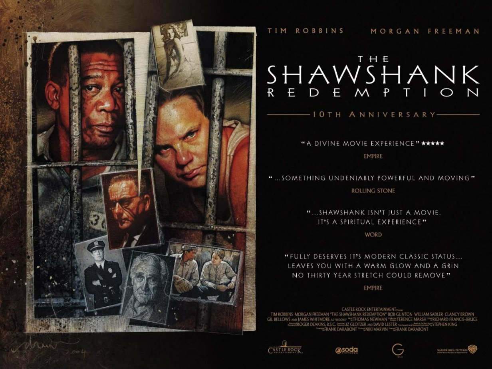

The Shawshank Redemption is directed by Frank Darabont and stars well-known actors such as Tim Robbins and Morgan Freeman. After being convicted of the murder of his wife and her lover, Andy Dufresne (Robbins) is sent to life in prison at the Shawshank State Penitentiary in Maine. While there, Andy begins to ingratiate himself with a group of inmates led by Red (Freeman). Although over time he carves out a nice life for himself at the prison, he encounters countless moments of opposition led by the warden (Robert Gunton) and the lead guard (Clancy Brown).
Although it has since experienced increasing prosperity after leaving theaters, The Shawshank Redemption was considered by many to be bomb at the box office as it failed to recover its production budget. Many higher-ups at Castle Rock Entertainment cited a lukewarm review in the Los Angeles Times as one of the main culprits against the film’s initial financial success. However, as you probably know, the movie has since improved its popularity and financial standing since its release onto television. This maneuver was made possible after Ted Turner purchased Castle Rock Entertainment. Since Turner then owned Castle Rock (and by proxy The Shawshank Redemption), it allowed for TNT to air the film at very low costs while still charging premium advertisement prices to companies. Rights retainers of films earn practically all of the TV revenue for films. This fact makes The Shawshank Redemption‘s success increasingly lucrative for Ted Turner. shawshank redemptionimage via IFC.com We can all agree that the film wouldn’t be as financially successful on television without being such a hit with fans and critics, but what traits allow for the film to continue to rake in the dough?
